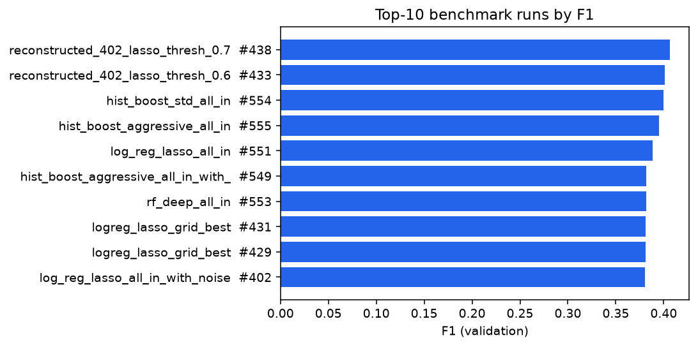
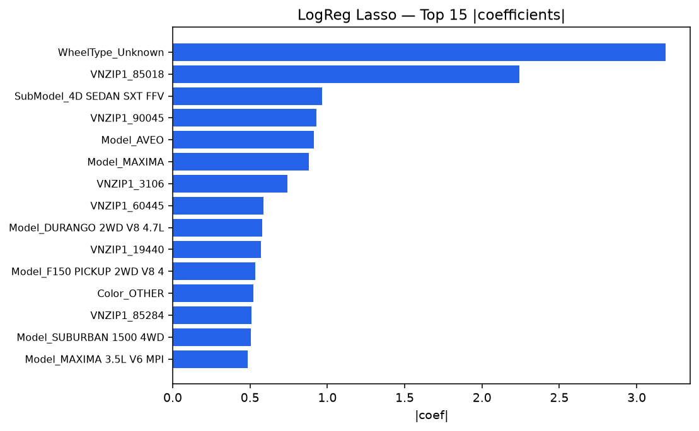
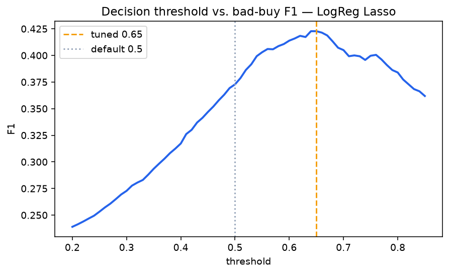

Bad-Buy Prediction | Fehlkäufe vor dem Kauf erkennen
Data-Science-Projekt mit 448-Runs-Experimentierframework | StackFuel Capstone
Die wichtigsten Technical Insights als Data-Science Deep-Dive
Ein Fehlkauf beim Gebrauchtwagen-Ankauf kostet mehr als den Kaufpreis
Ein US-Gebrauchtwagenhändler kauft Fahrzeuge günstig auf Auktionen ein, um sie mit Marge weiterzuverkaufen. Das größte Risiko: ein 'Bad Buy' — ein Fahrzeug mit schweren Mängeln, das sich nicht weiterverkaufen lässt und stattdessen Lager-, Reparatur- und Abschreibungskosten verursacht.
Leitfrage: Lässt sich vor dem Kauf erkennen, ob ein Angebot ein Fehlkauf ist — ohne zu viele gute Autos abzulehnen? Das ist ein Precision/Recall-Abwägungsproblem auf einer seltenen Zielklasse, kein Accuracy-Problem.
Warum Accuracy hier die falsche Metrik ist
Triage statt Automatik.
Das Modell markiert Auffälligkeiten zur menschlichen Prüfung – kein automatisches Ablehnen oder Durchwinken.
65.620 Fahrzeuge, 33 Rohspalten — nichts gelöscht, alles aufgefüllt
65.620 Trainings-Fahrzeuge, 33 Rohspalten — stratifizierter Split 52.496 Train / 13.124 Test
106.348 kategoriale Lücken mit 'Unknown' aufgefüllt, 621 unplausible Werte über Gruppen-Median-Imputation geheilt
0 Zeilen gelöscht — 100 % Retention Rate, jedes Auto bleibt im Datensatz
12,35 % Bad Buys — Balance als Kern der Herausforderung
57.516 gute Käufe (87,65 %) vs. 8.104 Bad Buys (12,35 %).
Ein Modell, das immer 'guter Kauf' tippt, hätte 87,65 % Accuracy und würde trotzdem keinen einzigen Fehlkauf finden — deshalb ist F1 der Bad-Buy-Klasse die Leitmetrik, nicht Accuracy.
Text-Spalten ohne offensichtlichen Zahlenwert sind die stärksten Risikotreiber
8 redundante MMR-Preisspalten werden zu 3 Verhältnis-Features verdichtet
Die MMR-Preisfamilie (Einkauf/Aktuell × Auktion/Handel × Schnitt/Clean) ist stark untereinander korreliert — die 8 rohen Preis-Spalten sagen im Grunde alle dasselbe. Schlussfolgerung: 3 verdichtete Verhältnis-Features statt 8 Rohspalten — feat_price_ratio (Einkaufspreis vs. Marktpreis), feat_price_diff (Abweichung), feat_market_trend (Marktpreis-Entwicklung seit Einkauf).
19 Feature-Sets × 6 Modellfamilien statt Ad-hoc-Training
19 Sets nach Risiko-Hypothese, von baseline_minimal (4 Feat.) bis all_in_with_noise (28 Feat.)
3 Lernprinzipien × 2 Ausbaustufen: LogReg Ridge/Lasso, Random Forest flach/tief, HistGradientBoosting Standard/aggressiv
Jedes Feature-Set gegen jedes Modell — der ModelTracker protokolliert automatisch jede Kombination
Selbstgebauter Experiment-Logger statt manuellem Vergleich
Kombinationen aus Model- und Feature-Kataloge
Pro Durchlauf werden F1, Recall, Precision und ROC-AUC in eine dauerhafte CSV geschrieben. Ein neuer Bestwert wird automatisch markiert. Das Modell selbst wird nur bei Bestwert oder F1 ≥ 0,30 exportiert ('Smart Export') — kein Datenmüll durch schwache Modelle.
448 protokollierte Durchläufe in rund einer Stunde aktiver Rechenzeit
Nach einer Stunde Wartezeit steht sofort eine auswertbare Tabelle mit allen 448 Kombinationen zur Verfügung.
Top-10 von 448 Durchläufen nach F1

Kategoriale Signale sind kein Rauschen, sondern der Haupthebel
| Feature-Set | Features | Bester F1 (Tracker) |
|---|---|---|
| numeric — nur Zahlen (Preis, Alter, Kilometerstand) | 6 | 0,2918 |
| all_in_with_noise — voller Katalog inkl. Kategorien | 28 | 0,3726 |
Noise mit wichtigem Informationsgehalt
Der Unterschied hält über mehrere Modellfamilien hinweg — kein Zufallstreffer. In die Breite zu gehen, statt vorab nach vermuteter Wichtigkeit auszuwählen, war der entscheidende Schritt — nicht ein bestimmter Algorithmus.
Das stärkste Signal ist ein fast leeres Datenfeld

95,6 % unauffällig gefüllt, aber die fehlenden 4,4 % sind der Alarm
| WheelType-Wert | Anteil der Autos | Fehlkaufquote |
|---|---|---|
| Alloy (Alufelgen) | 49,3 % | 11,1 % |
| Covers (Radkappen) | 45,3 % | 8,1 % |
| Special | 1,0 % | 12,6 % |
| Fehlt (leer) | 4,4 % | 70,3 % |
| Durchschnitt (alle Autos) | — | 12,3 % |
Ein in 95,6 % der Fälle unauffälliges Feld wird in den restlichen 4,4 % zum stärksten Alarmsignal – sechsmal höher als der Durchschnitt.
Der Standard-Schwellenwert markiert zu viele Autos

F1 0,37 → 0,42 durch den richtigen Schwellenwert
Ziel: Balance der Triage
Fehlkäufe blockieren, gute Autos behalten – statt generischem 0,5-Standard.
Alle drei Kandidaten auf demselben Held-out-Test (13.124 Fahrzeuge)
Baseline F1 0,29 (Recall 0,61/Precision 0,19) · Random Forest F1 0,35 (0,64/0,24) · LogReg Lasso F1 0,37 (0,60/0,27) — Champion.
Beim getunten Threshold 0,65
643 von 1.621 echten Fehlkäufen erkannt (TP), 978 verpasst (FN), 778 gute Autos fälschlich markiert (FP), 10.725 korrekt durchgewunken (TN).
Blinder Fleck bei verpassten Fehlkäufen, akzeptabler Trade-off bei Fehlalarmen
Einsatz heute, offene Schritte für morgen
Tech-Stack, Reproduzierbarkeit
Vier Methodik-Lehren, kompakt
Bad-Buy Prediction bei Gebrauchtwagen-Auktionen
Data-Science-Projekt | StackFuel Capstone
Fast leer und doch stark
Ein fast leeres Datenfeld war das stärkste Signal. Systematisches Testen schlägt Handverlesen: ein breiter Feature-Katalog plus sauberes Threshold-Tuning bringen mehr als ein einzelnes 'besseres' Modell. Der Champion läuft als Triage-Filter, nicht als Automatik — er markiert, ein Mensch entscheidet.